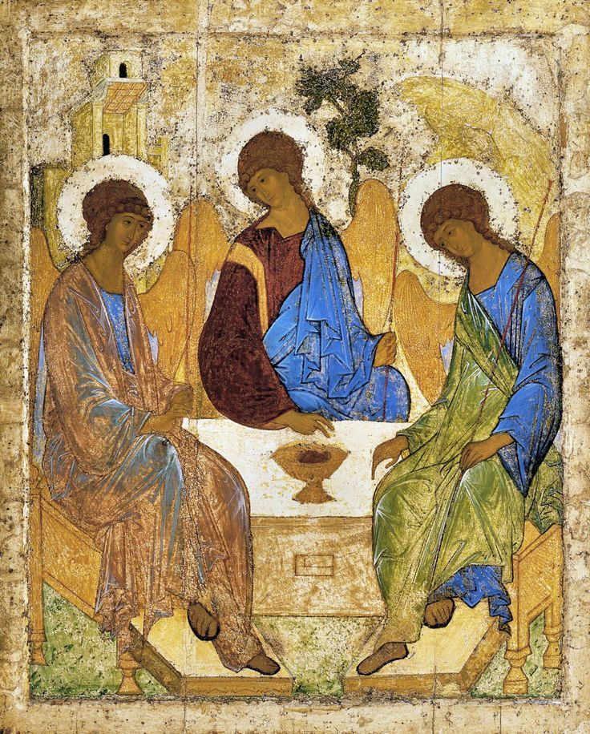

Beliefs & Doctrine
Creed, Trinity, Scriptures and Tradition.
Orthodox doctrine is the Church’s lived confession of the God who reveals Himself for our salvation. The Nicene Creed expresses this confession in words that unite believers across centuries and cultures. Theology in Orthodoxy is inseparable from worship, because we learn who God is by encountering Him in the Scriptures, the sacraments, and prayer. Right belief guards right worship, and right worship shapes a holy life.
At the center stands Jesus Christ, true God and true man, who unites divinity and humanity in His one Person. Through His death and Resurrection He opens the path to deification, the healing and glorification of human nature by grace. The Holy Spirit makes this saving work present in the Church, gathering people into a communion of love. Doctrine therefore serves transformation, not mere information.
Scripture and Tradition
The Orthodox Church venerates Holy Scripture as inspired by God and authoritative for faith and life. Scripture is received within Holy Tradition, the living memory of the Church that includes worship, the Fathers, councils, and the witness of the saints. Tradition does not add to Scripture but provides the right context in which the biblical message is understood and lived. Together they ensure that the same Gospel preached by the Apostles continues to resound in every generation.
God: Trinity and Incarnation
Orthodoxy confesses one God in three Persons—Father, Son, and Holy Spirit—eternally united in love. The Son became man from the Virgin Mary, taking our nature without sin and remaining fully divine. In Christ, humanity is healed and restored, because what is not assumed cannot be saved. The Incarnation reveals the purpose of creation: that human beings might share by grace in the life of the Holy Trinity.
The Sacraments
The Mysteries, or sacraments, are encounters with Christ’s saving life given through the Church. Baptism and Chrismation make us participants in His death and Resurrection and members of His Body. The Eucharist nourishes believers with the true Body and Blood of Christ, uniting them to Him and to one another. Through Confession, Marriage, Ordination, Unction, and other rites, God continues to sanctify concrete moments of human life.